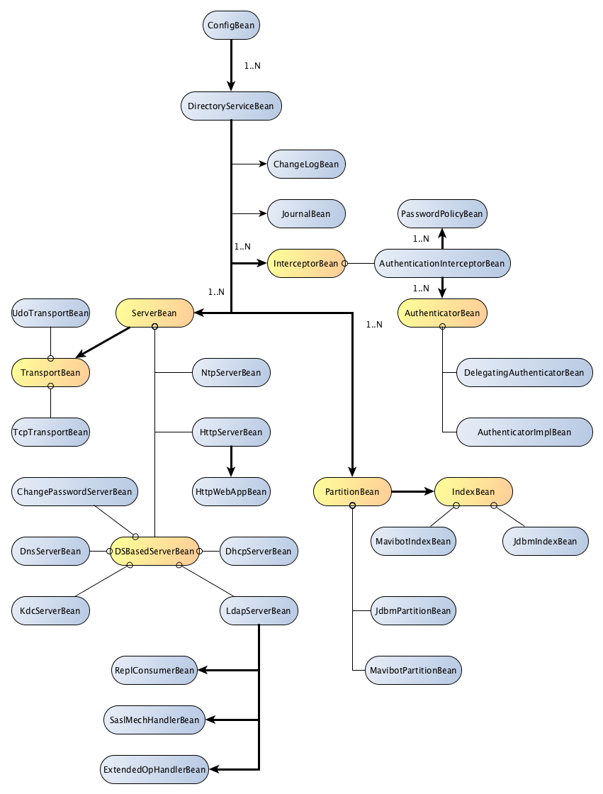

ApacheDS 2.0
Downloads
Documentation
- Basic User Guide
- Advanced User Guide
- Developer Guide
- Kerberos User Guide
- Configuration
- JavaDocs
- Cross-Reference
Support
Community
About Apache
2.1 - Configuration Description
It’s a good practice to not modify the configuration LDIF file by hand, instead use the Studio Configuration plugin to modify the server configuration.
Overall structure
The configuration is stored in a hierarchical order, where sub-elements are related to their parent. For instance, the Transports are associated to the corresponding Server that uses them. Each server may contain one or more transports.
The following hierarchy describe the different kind of elements that one can configure, and their relationship :
- ou=config
- ads-directoryServiceId=XXXXX (Directory Service)
- ads-changeLogId=XXXXX (ChangeLog)
- ads-journalId=XXXXX (Journal)
- ou=interceptors (Interceptors)
- ou=partitions (Partitions)
- ou=servers (Servers)
- ads-directoryServiceId=XXXXX (Directory Service)
Note that in order to modify one element, you have to go down the tree up to the entry containing the elements you want to modify. For instance, to modify the TCP port for LDAP server, you have to modify the following entry :
**ads-transportid=ldap, ou=transports, ads-serverId=ldapServer, ou=servers, ads-directoryServiceId=XXXXX, ou=config**
We will now explain each one of those elements.
Directory Service
This is the heart of the entire system : the place where we store the data. Most of the servers are depending on this component. You may have more than one server(e.g LDAP, Kerberos, ChangePassword etc), but only one DirectoryService.
Configuration options:
| AttributeType | type | default value | Description |
|---|---|---|---|
| ads-directoryServiceId | String | The unique identifier for the service | |
| ads-enabled | boolean | true | Tells if the DirectoryService is enabled |
| description | String | N/A | A short optional description |
| ads-dsReplicaId | int | 1 | The replication identifier |
| ads-dsAccessControlEnabled | boolean | true | Tells if the Access Control interceptor is active |
| ads-dsAllowAnonymousAccess | boolean | false | Tells if the service allow anonymous access |
| ads-dsDenormalizeOpAttrsEnabled | boolean | true | Tells if the service should denormalize operational attributes |
| ads-dsPasswordHidden | boolean | true | Tells if the passwords should be encrypted (not used) |
| ads-dsSyncPeriodMillis | long | 15000 | The delay in milliseconds before we flush data on disk |
| ads-dsTestEntries | String | N/A | Not used |
Change Log
The ChangeLog is an optional system that logs every change made on the server, and also records the revert operation, allowing the system to rollback the changes if needed. This is extremely useful when running tests.
Note that at the moment, changelog has in-memory support only.
It’s disabled by default.
Configuration options:
| AttributeType | type | default value | Description |
|---|---|---|---|
| ads-changeLogId | String | The unique identifier for the system | |
| ads-enabled | boolean | false | Tells if the ChangeLog system is enabled |
| description | String | N/A | A short optional description |
| ads-changeLogExposed | boolean | false | Tells if the ChangeLog is exposed to the users |
Journal
The Journal logs every modification on the file system. It’s intended to be used if the DirectoryService crashes, as we can re-apply the journal starting from a date in the past where we know that the underlying database is correct.
Configuration options:
| AttributeType | type | default value | Description |
|---|---|---|---|
| ads-journalId | String | N/A | The unique identifier for the Journal |
| ads-enabled | boolean | false | Tells if the Journal system is enabled |
| description | String | N/A | A short optional description |
| ads-journalWorkingDir | String | N/A | The working directory the Journal will be stored in |
| ads-journalRotation | String | N/A | The number of operation stored befoe the journal is rotated |
| ads-journalFileName | String | journal.txt | The file contaning the Journal |
Interceptors
The default Interceptors are generally not configurable. You don’t want to change their order, or remove anyone from the default interceptors unless you are very familiar with the internals of ApacheDS and/or including a custom interceptor.
However, at least one default Interceptor can be configured : the authenticationInterceptor.
In the case where one would like to add an interceptor, it’s enough to add the associated entry containing the interceptor identifier, under the ou=interceptors entry. It must have an order. Here are the elements that can be configured in such a case :
| AttributeType | type | default value | Description |
|---|---|---|---|
| ads-interceptorid | String | N/A | The unique identifier for this Interceptor |
| ads-enabled | boolean | false | Tells if the Interceptor is enabled |
| description | String | N/A | A short optional description |
| ads-interceptororder | int | N/A | The position in the chain for this interceptor |
| ads-interceptorclassname | String | N/A | The class implementing this interceptor |
Authentication Interceptor
This Interceptor is in charge of managing the users authentication. It is associated with Authenticators, and with Password Policies.
Authenticators
We may have various Authenticator declared for a given server. The default server has three different Authenticators, which are :
- anonymousAuthenticator : used for anonymous requests
- simpleAuthenticator : handle simple authentication, based on a password
- strongAuthenticator : handle SASL authentication.
One can add a new Authenticator, if needed. It’s just a matter of creating a new entry under the ou=authenticators,ads-interceptorId=authenticationInterceptor,ou=interceptors entry, containing the two following elements :
| AttributeType | type | default value | Description |
|---|---|---|---|
| ads-authenticatorId | String | N/A | The unique identifier for this Authenticator |
| ads-enabled | boolean | false | Tells if the Partition is enabled |
| description | String | N/A | A short optional description |
| ads-authenticatorClass | String | N/A | The FQCN for the class implementing the AUthenticator |
Password Policies
There are many possible configurable options for the PasswordPolicy system. Here is a list of all the options. See the password policy draft for an indept explanation of the respective attributes :
| AttributeType | type | default value | Description |
|---|---|---|---|
| ads-pwdId | String | N/A | The unique ID of the PasswordPolicy system |
| ads-pwdAttribute | String | userPassword | The name of the attribute to which the password policy is applied |
| ads-pwdMinAge | int | 0 | Holds the number of seconds that must elapse between modifications to the password |
| ads-pwdMaxAge | int | 0 | Holds the number of seconds after which a modified password will expire. If 0, never expires |
| ads-pwdInHistory | boolean | 0 | Specifies the maximum number of used passwords stored in the pwdHistory attribute (0 means no storage) |
| ads-pwdCheckQuality | boolean | 0 | Indicates how the password quality will be verified while being modified or added (0 means no check) |
| ads-pwdMinLength | int | 0 | The minimum number of characters that must be used in a password (0 means no limit) |
| ads-pwdMaxLength | int | 0 | The maximum number of characters that may be used in a password (0 means no limit) |
| ads-pwdExpireWarning | boolean | 0 | The maximum number of seconds before a password is due to expire, and that expiration warning messages will be returned to an authenticating user (0 means no message wil be sent to user) |
| ads-pwdGraceAuthNLimit | int | 0 | The number of times an expired password can be used to authenticate (0 means do not allow a expired password for authentication) |
| ads-pwdGraceExpire | boolean | 0 | Specifies the number of seconds the grace authentications are valid (0 means no limit) |
| ads-pwdLockout | boolean | false | Flag to indicate if the account needs to be locked after a specified number of |
| consecutive failed bind attempts. The maximum number of consecutive failed bind attempts is specified in ads-pwdMaxFailure | |||
| ads-pwdLockoutDuration | int | 300 | The number of seconds that the password cannot be used to authenticate due to too many failed bind attempts |
| ads-pwdMaxFailure | int | 0 | The number of consecutive failed bind attempts after which the password may not be used to authenticate (0 means no limit) |
| ads-pwdFailureCountInterval | int | 0 | The number of seconds after which the password failures are purged from the failure counter (0 means reset all the pwdFailureTimes after a successful authentication) |
| ads-pwdMustChange | boolean | false | Flag to indicate if the password must be changed by the user after they bind to the directory after a password is set or reset by a password administrator |
| ads-pwdAllowUserChange | boolean | true | Indicates whether users can change their own passwords |
| ads-pwdSafeModify | boolean | false | Flag to specify whether or not the existing password must be sent along with the new password when being changed |
| ads-pwdMinDelay | int | 0 | The number of seconds to delay responding to the first failed authentication attempt (0 means no delay) |
| ads-pwdMaxDelay | int | 0 | The maximum number of seconds to delay when responding to a failed authentication attempt (no delay) 0 means |
| ads-pwdMaxIdle | int | 0 | The number of seconds an account may remain unused before it becomes locked (0 means infinite) |
| ads-pwdValidator | String | N/A | The PasswordValidator FQCN (will use DefaultPasswordValidator if not provided) |
Partitions
The Partition is where the server stores your data. There are many parts that need to be configured in order to obtain the best performances out of the server. It’s also the part of the configuration you are more likely to modify, adding new Partitions or adding new Indexes.
You may have more than one Partition in your DirectoryService. There are at least three default _Partition_s, ou=system, ou=config and ou=schema Partition. ou=system is a JDBM Partition and the two others are LDIF partitions.
JDBM Partition
A JDBM Partition has the following configurable options :
| AttributeType | type | default value | Description |
|---|---|---|---|
| ads-partitionid | String | N/A | The unique identifier for this Partition |
| ads-enabled | boolean | false | Tells if the Partition is enabled |
| description | String | N/A | A short optional description |
| ads-partitionsuffix | String | N/A | The partition DN |
| ads-contextEntry | String | N/A | The entry associated with the suffix (in LDIF format) |
| ads-partitionSyncOnWrite | boolean | true | Tells the server to flush on disk on each write |
Once the above elements have been added, the Partition is available. You still have to create some mandatory indexes though.
Indexes
Each Partition have indexes, some are mandatory, and others are user provided. Here are the mandatory indexes :
| Index | role |
|---|---|
| apacheRdn | Stores the RDN for the entry, and the relation to its parent’s RDN |
| apachePresence | Used to index the attributeTypes used in the entry |
| apacheOneAlias | Stores the aliases one level below the current entry |
| apacheSubAlias | Stores the aliases below the current entry |
| apacheAlias | Stores the aliases |
| objectClass | Stores the relation between an ObjectClass an the entry using it |
| entryCSN | Stores the CSN for each entry |
| administrativeRole | Stores the entries that are AdminstrativePoints |
Indexed Attribute
Indexed attributes have a type, depending on the Partition type they are associated with. Currently, we have only one type, JdbmIndex. They have specific configurable elements.
Each index attribute has four basic elements that can be configured :
| AttributeType | type | default value | Description |
|---|---|---|---|
| ads-indexAttributeId | String | N/A | The unique identifier for this indexedAttribute |
| ads-enabled | boolean | false | Tells if the IntexedAttribute is enabled |
| description | String | N/A | A short optional description |
| ads-indexHasReverse | boolean | false | Tells if the IndexedAttribute has a reverse index |
The JdbmIndex type of index has some more configurable elements, all optional :
| AttributeType | type | default value | Description |
|---|---|---|---|
| ads-indexFileName | String | N/A | The index file name (default to the associated attributeType name) |
| ads-indexWorkingDir | String | N/A | The index working directory |
| ads-indexNumDupLimit | int | 512 | The maximum number of values for a single key before we use a sub-tree |
| ads-indexCacheSize | int | 100 | The number of cached pages for this index |
Servers
As we can see, we can start more than one server (a.k.a service). We have :
- a LDAP server
- a Kerberos server
- a changePassword server
- an HTTP Server
- a NTP Server
- a DHCP server
- a DNS server
There is a distinction though between the servers backed by a DirectoryService, and those that aren’t (like the HTTP and NTP servers).
All the DirectoryService backed servers share some common parameters, which are exposed in the following table :
| AttributeType | type | default value | Description |
|---|---|---|---|
| ads-searchBaseDN | Dn | N/A | The place were to start looking for authentication informations |
| ads-serverId | String | N/A | The server unique name |
| ads-enabled | boolean | N/A | Tells if the Server is enabled |
| description | String | N/A | A short optional description |
A server can define more than one transports : for instance, the Kerberos server uses UDP and TCP transports.
Transports
Here are the parameters for the Transport structure :
| AttributeType | type | default value | Description |
|---|---|---|---|
| ads-transportId | String | N/A | The identification |
| ads-transportAddress | String | localhost | The IP Address |
| ads-systemPort | int | -1 | The port |
| ads-enabled | boolean | N/A | Tells if the Transport system is enabled |
| description | String | N/A | A short optional description |
| ads-transportEnableSsl | boolean | false | Tells if SSL is activated (not used for UDP) |
| ads-transportNbThreads | int | 3 | he number of dedicated threads to process the messages |
| ads-transportBackLog | int | 50 | The number of messages on hold if the server is overloaded (not used for UDP) |
Ldap Server
Let’s start with the main server : the LDAP server.
The list of attributes that can be modified is exposed in the following table.
| AttributeType | type | default value | Description |
|---|---|---|---|
| ads-enabled | boolean | true | Tells if the LdapServer system is enabled |
| description | String | N/A | A short optional description |
| ads-confidentialityRequired | boolean | false | Whether or not confidentiality (TLS secured connection) is required |
| ads-maxSizeLimit | int | 1000 | The maximum number of entries the server will return |
| ads-maxTimeLimit | int | 1000 | The maximum number of seconds the server will use to process a search request |
| ads-maxPDUSize | int | 2048 | The maximal size for a PDU. This is currently not leveraged |
| ads-saslHost | int | N/A | The name of this host, validated during SASL negotiation |
| ads-saslPrincipal | String | N/A | The service principal, used by GSSAPI. |
| sads-saslRealms | List |
N/A | The list of realms serviced by this host. |
| ads-keystoreFile | String | N/A | The place on the filesystem where the Keystore is stored |
| ads-certificatePassword | String | N/A | The certificate’s password |
| ads-replReqHandler | String | (*) | The replication request handler FQCN |
| ads-replEnabled | boolean | FALSE | Tells if the replication system is enabled |
(*) org.apache.directory.server.ldap.replication.provider.SyncReplRequestHandler
Repl Consumers
This part of the configuration deals with the replication. It provides all the information for a server to become a consumer. A server can have many different consumers set.
All the consumers are stored under the ou=replConsumers entry, under the respective server entry.
Here are the configurable elements :
| AttributeType | type | default value | Description |
|---|---|---|---|
| ads-replConsumerId | String | N/A | The replica unique identifier |
| ads-searchBaseDN | String | N/A | The base DN for replication |
| ads-replProvHostName | String | N/A | The provider host name |
| ads-replProvPort | int | 389 | The port of the remote server |
| ads-replAliasDerefMode | String | NEVER_DEREF_ALIASES | The alias dereferencing mode to use |
| ads-replAttributes | String | * | The list of attributes to get back |
| ads-replRefreshInterval | int | 60000 | The delay between refreshes (60 seconds) |
| ads-replRefreshNPersist | boolean | true | Sets the replication mode |
| ads-replSearchScope | String | SUBTREE | The scope to use while searching for entries |
| ads-replSearchFilter | String | (objectClass=*) | The filter to use |
| ads-replSearchSizeLimit | int | 0 | The maximum number of entries to get back |
| ads-replSearchTimeOut | int | 0 | The maximum time to wait while fetching the entries |
| ads-replUserDn | String | N/A | The user DN used to bind on the provider |
| ads-replUserPassword | String | N/A | The password of the user |
| ads-replUseTls | boolean | true | Tells the server to use startTLS during replication |
| ads-replStrictCertValidation | boolean | true | Tells the provider to check the certificate if provided |
| ads-replPeerCertificate | byte[] | N/A | The certificate to use for replication |
| ads-replConsumerImpl | String | ReplicationConsumerImpl | The implementation |
| ads-replCookie | byte[] | N/A | The last received cookie |
Extended Op Handlers
An LDAP server can handle ExtendedOperations, assuming it has the code to do so. In ApacheDS, we do that by associating a Java class with each ExtendedOperation. We may provide more ExtendedOperations in the future. The list of supported ExtendedOperations is given below :
- CertGenerationRequest : Generate a certificate on demand
- GracefulShutdownRequest : Requires the server to shutdown gracefully
- StartTLSExtendedOperation : Process the StartTLS request
- StoredProcedureExtendedOperation : Execute a Stored procedure
Adding a new ExntedeOperatonHandler is just a matter of adding a new entry under the ou=extendedOpHandlers entry, with the given elements :
| AttributeType | type | default value | Description |
|---|---|---|---|
| ads-enabled | boolean | true | Tells if the ExtendedOpHandler system is enabled |
| description | String | N/A | A short optional description |
| ads-extendedOpId | String | N/A | The ExtendedOpHandler unique identifier |
| ads-extendedOpHandlerClass | String | N/A | The class FQCN that implements the handler |
SASL Mechanisms
We have various SASL mechanisms, which can be configured. the list of supported SASL mechanisms is :
- CRAM-MD5
- DIGEST-MD5
- GSS-SPNEGO
- GSSAPI
- NTLM
- SIMPLE
This list is stored in the configuration. It’s possible to add new mechanisms if needed, simply by adding an entry containing those elements, under the ou=saslMechHandlers
| AttributeType | type | default value | Description |
|---|---|---|---|
| ads-enabled | boolean | true | Tells if the Transport system is enabled |
| description | String | N/A | A short optional description |
| ads-saslMechName | String | The mechanism name | |
| ads-saslMechClassName | String | N/A | The mechanism class name |
| ads-ntlmMechProvider | String | N/A | The NTLM provider |
Kerberos Server
The KerberosServer configuration is an important part of the configuration. It depends on a DirectoryService too, as most of the informations managed by a KerberosServer are store there.
The list of attributes that can be modified is exposed in the following table.
| AttributeType | type | default value | Description |
|---|---|---|---|
| ads-enabled | boolean | true | Tells if the KerberosServer is enabled |
| description | String | N/A | A short optional description |
| ads-krbAllowableClockSkew | int | 300000 | The allowable clock skew in milliseconds (5 minutes) |
| ads-krbEncryptionTypes | List |
The encryption types | |
| ads-krbEmptyAddressesAllowed | boolean | true | Whether empty addresses are allowed |
| ads-krbForwardableAllowed | boolean | true | Whether forwardable addresses are allowed |
| ads-krbPaEncTimestampRequired | boolean | true | Whether pre-authentication by encrypted timestamp is required |
| ads-krbPostdatedAllowed | boolean | true | Whether postdated tickets are allowed |
| ads-krbProxiableAllowed | boolean | true | Whether proxiable addresses are allowed |
| ads-krbRenewableAllowed | boolean | true | Whether renewable tickets are allowed |
| ads-krbKdcPrincipal | String | krbtgt/EXAMPLE.COM@EXAMPLE.COM | The service principal name |
| ads-krbMaximumRenewableLifetime | long | 1000 * 60 * 60 * 24 * 7 | The maximum renewable lifetime in millisconds (7 days) |
| ads-krbMaximumTicketLifetime | long | 1000 * 60 * 60 * 24 | he maximum ticket lifetime in milliseconds (24 h) |
| ads-krbPrimaryRealm | String | EXAMPLE.COM | The primary realm |
| ads-krbBodyChecksumVerified | boolean | true | Whether to verify the body checksum |
Of course, a Transport has to be defined under the KerberosServer entry (see Transports).
Http Server
We have a Http Server embedded, which is used to manage some parts of the server. One can inject a web application, which has direct access to the embedded LdapServer, for instance. It can be useful for sending LDAP requests using DSML, for instance.
There is one single element that can be configured :
| AttributeType | type | default value | Description |
|---|---|---|---|
| ads-enabled | boolean | true | Tells if the HttpServer is enabled |
| description | String | N/A | A short optional description |
| ads-httpConfFile | String | N/A | The configuration file for this server |
An HttpServer without webApps is pretty useless, we now have to configure the underlying web applications
Http Web Apps
Each WebApp configuration must be added under the ou=webapps entry. Here are the configurable elements :
| AttributeType | type | default value | Description |
|---|---|---|---|
| ads-enabled | boolean | true | Tells if the HttpServer is enabled |
| description | String | N/A | A short optional description |
| ads-httpWarFile | String | N/A | The WAR file to use |
| ads-id | String | N/A | The unique ID for this WebApp |
| ads-httpAppCtxPath | String | N/A | The context |
Here is an example of configuration :
dn: ads-id=webApp1,ou=httpWebApps,ads-serverId=httpServer,ou=servers,ads-directoryServiceId=default,ou=config
objectclass: top
objectclass: ads-base
objectclass: ads-httpWebApp
ads-Id: webApp1
ads-httpWarFile: war file 1
ads-httpAppCtxPath: /home/app1
Change Password Server
To be added…
Bean graph
The following picture represent the structure of the container used to store the configuration inside the server. The yellow beans are abstract beans, extended by specific beans.
The bold links mean we can have more than one instance of a bean.
